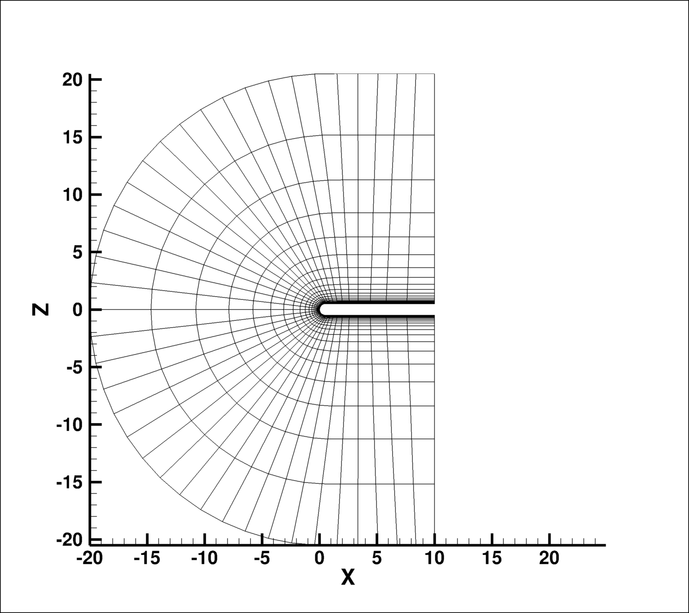

Public Access (formerly Langley Research Center)Turbulence Modeling Resource |
Return to: Numerical Analysis of 2D Hemisphere Cylinder Validation Case Intro Page
Return to: Turbulence Modeling Resource Home Page
TURBULENCE MODEL NUMERICAL ANALYSIS
Grids - 2D Hemisphere Cylinder
The methodology to create
a series of nested grids is provided.
The coordinate system is defined with x streamwise, y horizontal, and z vertical.
Each grid is a PLOT3D unformatted file of size ni x nj x nk.
For the structured grids,
the number of points in the spanwise direction (ni=2 for 2D), nj
is the number of points along the body, and nk is
the number of points in the normal direction.
The grids range from 2 x 321 x 289 (finest grid) to 2 x 11
x 10 (coarsest grid). The constructed grids are not
necessarily nested grids but coarser grids can be constructed
by extracting every other point in two directions (i.e.,
regular refinement). (A capability to construct a nested
family of structured grids with prolongation and
restriction operators constructed using the grid mapping
is available by preprocessing utilities within FUN3D.)
The figure below shows a view of the 2D level 4 grid of size nj=41 x nk=37 in
the streamwise x normal directions.

Note: be sure to use double precision when reading (or writing) the grids!
Note: be sure to use double precision when reading (or writing) the grids!
STRUCTURED VERSIONS OF GRIDS
PLOT3D Files
A simple FORTRAN program is provided that can be used to generate the grids in PLOT3D format. All information has been hardwired into the program except three integer inputs.
The second input is integer, between 0 and 2 and indicates the type of grid to be generated (0 is inviscid, 1 is laminar, and 2 is turbulent).
The third input is integer, between 1 and 3 and indicates the type of grid to be generated (1 is 2D, 2 is 3D with symmetry in y, 3 is 3D without symmetry in y). Use "1" to create a 2-D grid like that shown above; it is in the x-z plane with two planes in the y-direction.
Neutral Map Files associated with each grid are also generated by the above program (these files specify grid indices associated with each boundary condition - see The Neutral Map File). The following is an example neutral map file:
Return to: Numerical Analysis of 2D Hemisphere Cylinder Validation Case Intro Page
Return to: Turbulence Modeling Resource Home Page
Page Curators: Christopher Rumsey,
Ethan Vogel,
Clark Pederson
Last Updated: 05/13/2019